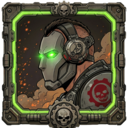

01

padm0nkXbox Cloud Gaming input bridge
Mouse and keyboard for Xbox Cloud Gaming.
padm0nk gives xCloud a virtual Xbox controller: WASD becomes left stick, mouse movement becomes right stick, and remapping stays available in-game.
02
Fast remaps
Buttons, mouse buttons, wheel input, combos, invert-Y, sensitivity, smoothing, aim curve, all live.03
Local-first
Config stays in browser storage. No analytics, telemetry, accounts, remote code, or padm0nk server.Load from source
- 1 Install dependencies:
npm install - 2 Build extension:
npm run build -
3 Open
chrome://extensionsoredge://extensions -
4 Enable Developer mode, then load the generated
dist/folder
Aim notes
WASDleft-stick movement
Mouseright-stick aim via Pointer Lock
F8enable / disable instantly
F9open binds overlay
Gamepad emulation keeps the game's maximum turn rate. Sensitivity changes how quickly mouse movement reaches full stick deflection; it does not bypass game-side turn-speed limits.
Data statement
padm0nk is free and open source. It stores your config locally in browser storage so tabs can update live. It has no account system, analytics, telemetry, remote code loading, or extension-operated server. Source is available for audit; inspect it, build it, load it.